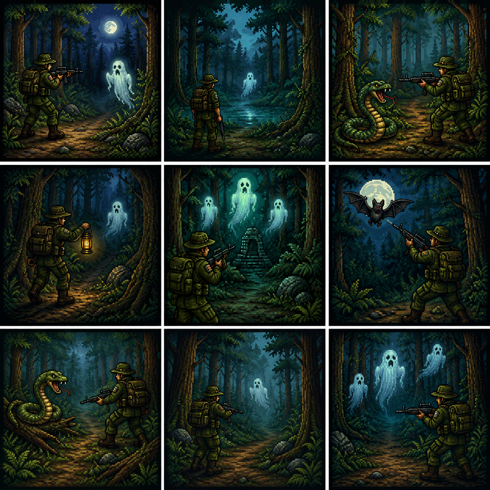

Istorioa hau da: Zuk eiztari bat zara, baso batera jun zena janariaren bila, neguan gosez ez hiltzeko, baino bapatean entzun zenun soinu oso arraro bat zetorrena baso barrutik. Ikaratuta geratu zinen segundu batzuz, baino segituan soinua atera den lekura jun zinen, hor aurkitu zenun oso animali arraro bat ziztu bizian zure aurpegira salto egin zuena, zu inkonziente usten.

Duzun helburua da baso hartatik irten da, hainbat monstruo akabatuko beharko dituzu lehenago eta batetik ihes egin. Baino azkeneko momentuan baso hartatik ihes ahal egiteko, saguxarra hilko behar duzu eta bere burua trofeo bezala eraman etxera.